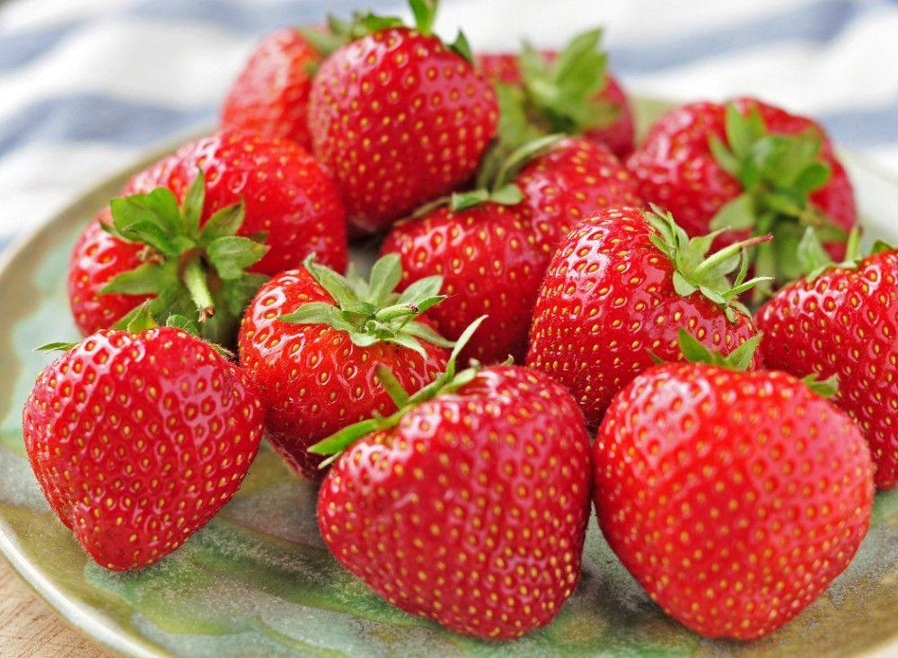

LICSI🙋
Miért fontos az egészséges életmód?🥕
Teszteld tudásod!
Regisztráció🖊️
Bejelentkezés👋
Minden nap egy alma az orvost távol tartja.
Üdvözöljük a LiCsi Webáruház oldalán!

Lépjen be vagy regisztráljon!
Bejelentkezés
Regisztráció